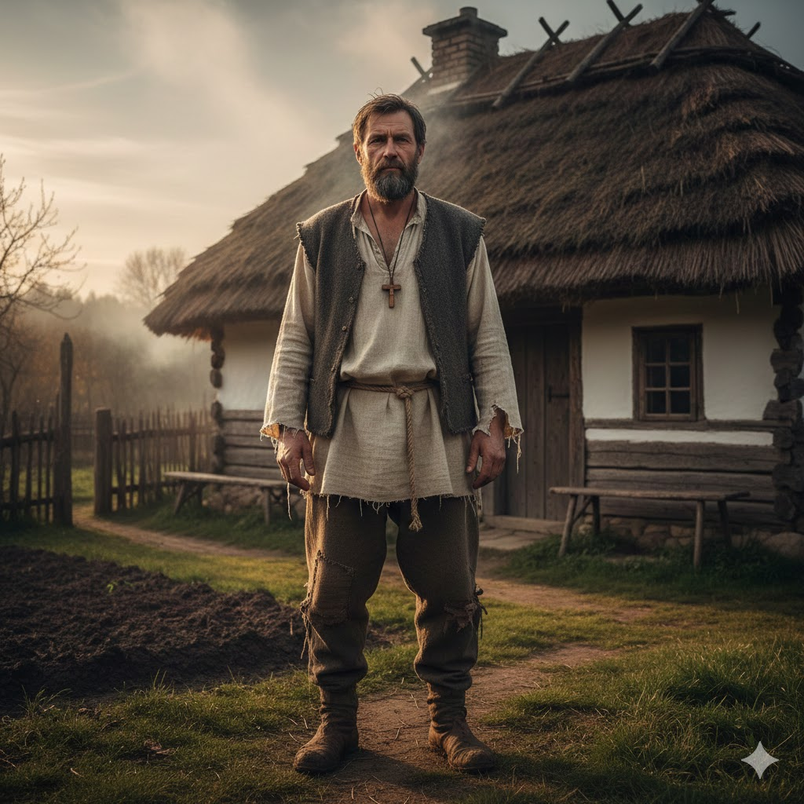
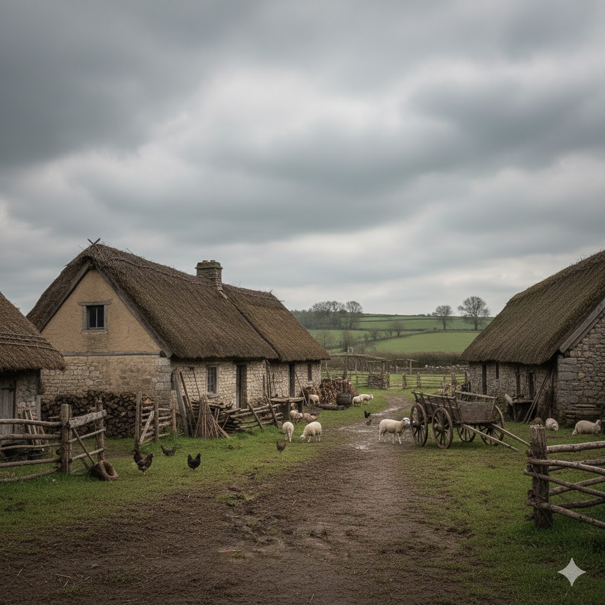
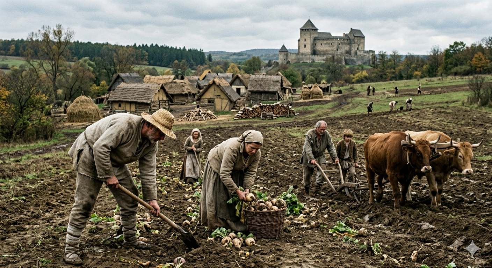
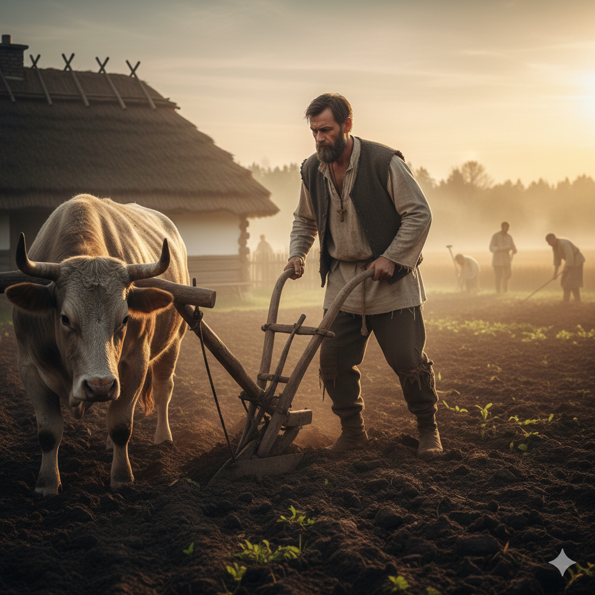
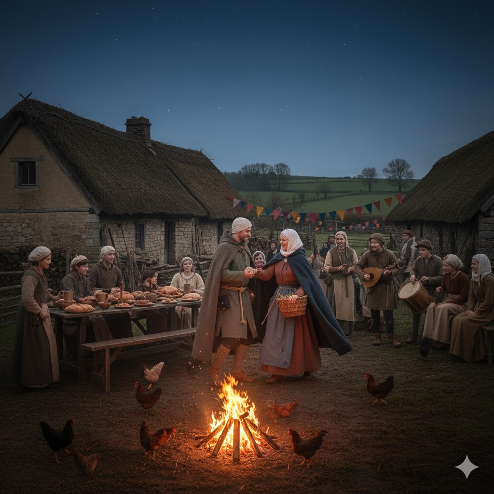
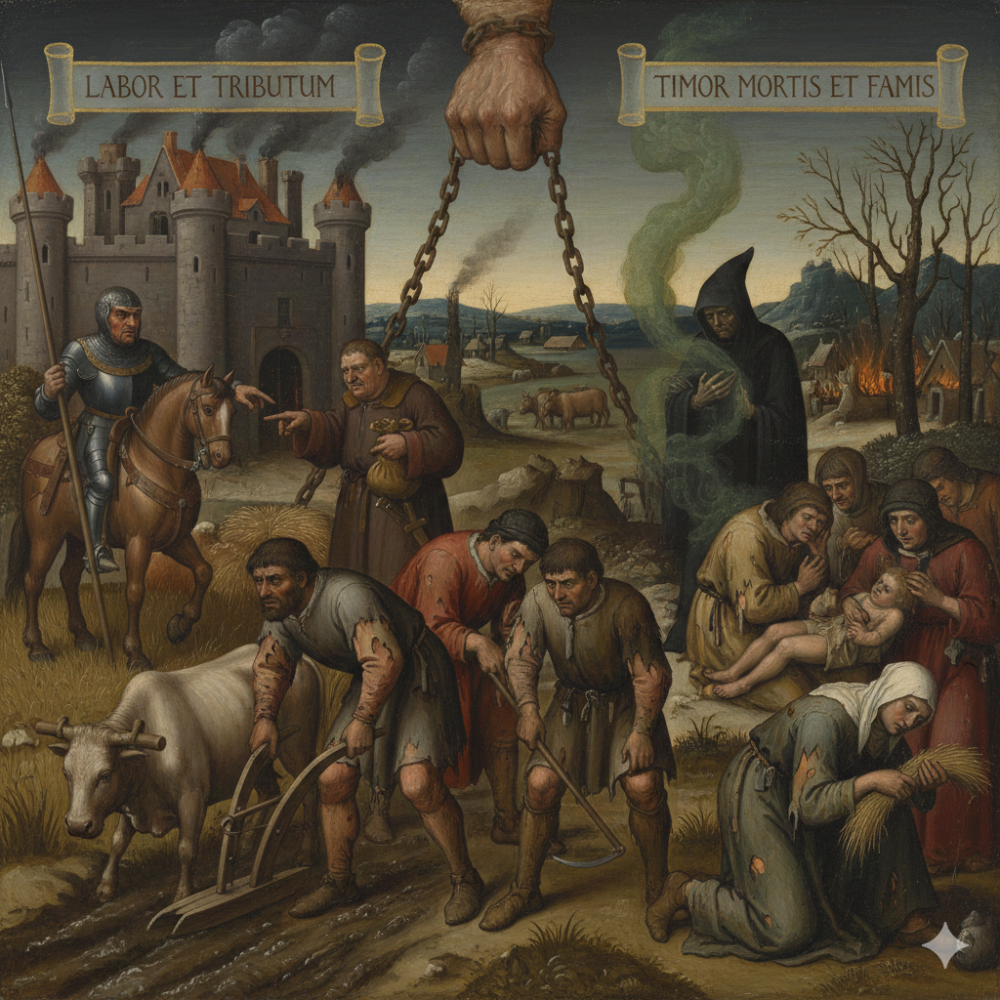
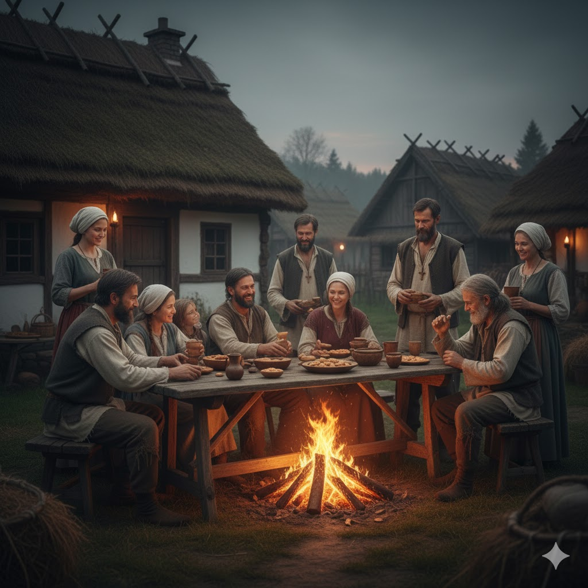
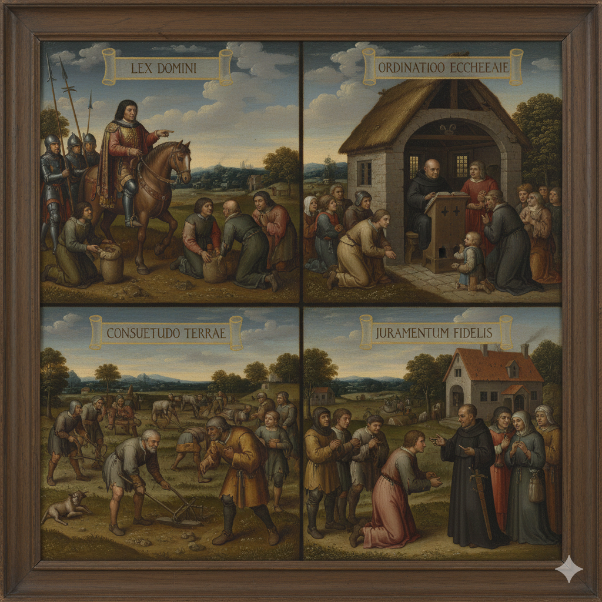

Jellemző öltözködés
Egyszerű, durva ruhát hordok reggel, amint felkelek. Lenből vagy gyapjúból készült az ingem, nadrágot vagy hosszú ruhát. Lábamon egyszerű csizma van. A ruháim lenből és gyapjúból készültek, a feleségem csinálta. Az anyagot gyakran mi állítjuk elő. A ruhám megmutatja, hogy parasztember vagyok. Szakadt, kopott. Nem viselek drága ékszereket, mint a nemesek. szegény

Környezet
Faluban élek, egy földesúr birtokán. A házam fából és sárból tapasztott falú, tetejét szalma fedi. Egyetlen nagy helyiségben alszunk, eszünk és dolgozunk. Van egy kis földem, amit művelek, de nem az enyém, a földesúré. A faluban van templom, malom és kovácsműhely. A földesúr vára nem messze magasodik, oda hordjuk a beszolgáltatást.

Életmód
Hajnal előtt kelek, először ellátom az állatokat, majd kimegyek a földekre.A hét nagy részében a földesúr birtokán dolgozom: szántok, vetek, aratok vagy fát gyűjtök, attól függően, melyik évszak van. Délben rövid pihenőt tartok. állatokat kenyeret, hagymát, néha szalonnát eszem. Napnyugtáig dolgozom, utána hazamegyek, és a saját kis földemet művelem, hogy a családomnak is legyen élelme.

Feladataim
A földesúr földjén dolgozom. Szántok, vetek, aratok. Robotot végzek, és terménnyel adózom.A földesuramnak tartozom engedelmességgel. Az egyháznak tizedet fizetek.

Ünnepek
Legfontosabb ünnepeink a karácsony és a húsvét. Aratás után is ünneplünk. Az ünnep szentmisehallgatással kezdődik. Fontos számunkra, mert hitünk erőt ad a nehéz időkben.

Kötelezettségek
Többféle kötelezettségem van. A legnehezebb a robot, amikor a földesúr földjén kell ingyen dolgoznom heti több napon. Fizetem a terményadót (gabona, bor, állat), és az egyháznak a tizedet. Emellett lehetnek külön díjak: malomhasználatért, házasságért vagy örökléskor. Ezek nélkül nem maradhatok a földemen.

Viselkedés és emberi kapcsolatok
A faluban segítjük egymást a munkában. Muszáj, vagy különben végünk.Alá vagyok rendelve a földesúrnak. Ő parancsol, én engedelmeskedem. Szeretnék már szabad lenni.Fontos számomra a becsület és a hűség. A hit erőt ad a nehéz munkához.

Szabályok és hagyományok
Az életünket a földesúr törvényei és a falu szokásjoga irányítja. Be kell tartanom a robot rendjét, az adók idejét, és engedelmeskednem kell az uradalmi bíróságnak.Az egyház szabályai is kötelezők: vasárnap templom, böjti napok megtartása, házasság egyházi rend szerint. Gyakori a közös munka és a kölcsönös segítség, mert egymásra vagyunk utalva.
